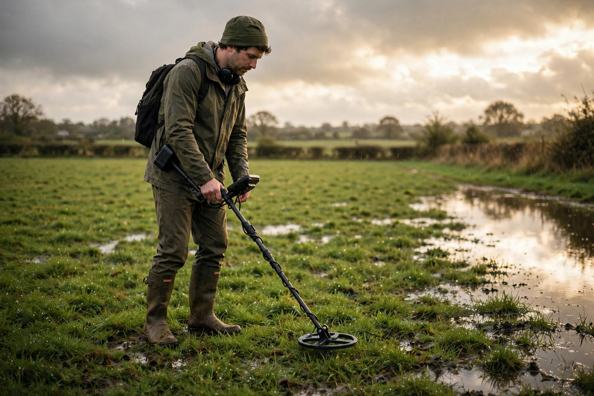

Metal detecting after rain: what wet ground changes

Ask a group of detectorists whether rain helps or hurts and you will start an argument. One camp swears the day after a soaking rain is the best hunting there is — signals deepen, old sites give up new targets. The other camp has watched a machine chatter and false in wet ground until the hunt was a write-off. The honest answer is that both camps are reporting real hunts. Wet ground changes several things at once — how the soil carries a signal, how your detector type responds, how the digging goes, and how well the ground forgives you afterwards — and whether the trade favours you depends on the site you pick. This guide sorts the claims, including where they come from, and ends with a simple way to decide: go, wait, or change sites.
Why damp soil carries a signal better
The core claim is real and widely reported: wet ground conducts better than dry. Hobbyist guides state it directly — wet soil does a better job of conducting the signal, so targets register deeper after rain — and a long-running beginner tips page gives the classic application: a place that has been hunted hard is worth detecting again after a big rain, when soaked ground can bring deeper targets within reach. A detecting club's beginner FAQ says the same in its timing advice, listing post-rainfall periods as offering softened ground and improved signal depth, and noting that even the soil moisture of early morning and evening helps conductivity.
The forum reports line up behind it. On the Friendly Metal Detecting Forum, hunters describe moisture as strengthening signals — one calls wet-ground hunting "detecting in Hi-Def" — and several report that re-hunting an area after a soaking rain turns up all kinds of targets missed in the dry pass (Friendly Metal Detecting Forum thread: metaldetectingforum.com/index.php?threads/wet-or-dry-ground.110138). Treat the size of the effect with respect rather than worship: nobody credible promises you a specific extra depth in inches, because it varies with the soil and the machine. The consistent report is directional — damp, not dust-dry, is when marginal deep signals become diggable ones.
Where wet ground works against you
Now the counter-cases, because they are just as well documented. On a TreasureNet thread devoted to exactly this question, experienced users split the answer by detector type and ground (TreasureNet thread: treasurenet.com/threads/does-wet-ground-for-example-after-rain-effect-actual-coil-reads-vs-dry-land.638244). In low-mineral park soil, coin hunters with ordinary VLF machines report better depth when the ground is damp. But in high-mineral ground, the same thread reports a VLF machine doing better the drier it is, while a pulse-induction (PI) machine reportedly gains depth in damp ground because the pulse design handles minerals better. Detector type is not a detail here; it flips the conclusion.
The second counter-case is the one beginners meet first: wet salt sand. A TreasureNet report describes taking a VLF detector to a saltwater beach where it worked well in dry sand, then falsing heavily and losing depth once the sand was wet — with highly mineralized wet ground producing the same behaviour. Salt water is conductive in its own right, and a basic machine can end up reading the wet sand itself as a target that never stops. The third counter-case is iron. On that Friendly Metal Detecting Forum thread, a hunter who prefers moist ground almost everywhere makes one exception: iron-littered sites, where wet soil can spread the iron response and help mask a coin sitting among nails. If your site is a nail field, a dry day may genuinely serve you better.
So the "wet is better" rule survives — with three boundaries: it assumes mild soil, it depends on detector type in mineralized ground, and it reverses on wet salt sand for many basic machines.
The digging trade: easier cutting, harder repair
Rain changes the shovel work as much as the signals. The upside is obvious and everyone agrees on it: moist soil digs far more easily than sun-baked ground, and plugs cut in moist turf hold together as one piece instead of crumbling. The forum reports add a subtler benefit — plugs cut in moist ground settle back without leaving the brown dead patches that dry-ground digging can cause, because the turf was never stressed and thirsty to begin with.
The downside arrives with a soaking rain rather than a shower. Saturated ground does not cut; it tears and smears. Mud coats your digger, your boots, and every plug you handle, and a lawn dug while saturated is genuinely hard to put back convincingly. One experienced hunter on TreasureNet puts it as a rule: he prefers moist ground a day or two after a good rain, but a soaking rain shuts him down for a day or two, and he will not dig someone's yard until it dries out because the repair is too hard to do well. That is not fussiness — it is permission economics. A private lawn is the site type where a bad repair costs you the site forever, so the wetter the ground, the more your site choice should shift toward places where the surface forgives: beaches, woodchip, plowed or rough ground, and your own land first of all.
One dry-weather trick from the same forum thread is worth pocketing for summer: if you are digging a permission lawn in dry conditions, soaking the perimeter of your plug cut with water from a jug reduces the risk of the plug dying and browning — the kind of care that gets a hunter invited back.
A post-rain hunt plan
Putting it together, here is a workable routine for the day after rain — a procedure, because the order matters:
- Check the sky first. Post-rain means after the storm, not during it. A detecting club's FAQ gives the short version: protect the detector, watch for lightning, and keep solid footing. Lightning anywhere nearby ends the plan — no find is worth being the tallest metal pole in a field.
- Pick the site by wetness. Light rain, soil just damp: your regular park or field, and prioritize the spots you have already hunted hard — those are where a conductivity boost turns up missed deep targets. Heavy soaking: skip manicured turf and private lawns entirely, and head for the beach dry sand, woodchip tot lots, or rough ground. Any day, wet or not: if your machine falses in wet salt sand, stay in the dry sand above the waterline.
- Check your machine's water limits. A waterproof coil is not a waterproof detector. Many beginner machines can dunk the coil but not the control box. If the box is not waterproof, a weather cover — or, as one tips guide suggests in a pinch, a plastic bag over the box — keeps drizzle and overspray off it and its connections. Waterproof headphones are the matching kit for genuinely wet hunting.
- Re-run a known patch as your test. Start on ground you have hunted before and sweep it slowly. New signals on old ground are the effect made visible; if instead the machine chatters over wet mineralized soil, you have learned your site's boundary in ten minutes instead of an hour.
- Dig gently and repair immediately. In damp soil your plugs will cut beautifully — keep them small anyway, seat them firmly, and take your trash with you. The day after rain is when repairs heal fastest, if the ground was damp rather than saturated.
The decision in one view
| Conditions | Call | Best ground |
|---|---|---|
| Light rain, soil damp, mild soil | Go — best case | Your most-hunted park and field spots |
| Soaking rain, turf saturated | Wait a day, or change sites | Beach dry sand, woodchip, rough ground — not lawns |
| Wet salt sand, basic VLF machine | Change zones | Dry sand above the waterline |
| Iron-littered site | Dry day may be better | Save it for a dry spell; wet soil can spread the iron response |
| Thunderstorms nearby | Do not go | None — lightning ends the discussion |
What success looks like
A good post-rain hunt is not measured in promised extra inches — be wary of anyone who guarantees a depth figure, because the sources above, for all their agreement that damp helps, never attach a number to it. Success looks like this instead: you re-sweep a patch you had written off as hunted out and pull two or three targets that simply were not audible in the dry pass. Your plugs cut cleanly, sit back flush, and show no brown patches a week later. Your machine stayed dry inside its actual waterproofing limits. And you can say which of the day's conditions did the work — damp mild soil, an easy-digging morning — because you chose the site to match the weather rather than fighting it.
FAQ
How long after rain is the ground still "wet enough"? The reports above point to the day of and the day or two after a good rain, while the soil stays evenly damp. Once the surface is dusty and the plugs crumble again, you are back to dry-ground rules.
Can I detect while it is raining? Only within your machine's real waterproofing — coil-only waterproofing leaves the control box exposed — and never with lightning anywhere nearby. Most of the benefit waits for you after the storm anyway, in ground that stays damp for a day or two.
Why does my detector go crazy on wet beach sand? Wet salt sand is conductive and heavily mineralized, and many basic VLF machines read it as a constant false signal and lose depth — a behaviour reported by beach hunters in the sources above. Working the dry sand, or using a machine built for salt conditions, is the usual answer.
Is wet ground better for every detector? No. The TreasureNet discussion splits it by type: VLF machines gain in damp low-mineral soil but can do worse in wet high-mineral ground, where pulse-induction machines reportedly handle the damp better. Know which type you own before you generalize.